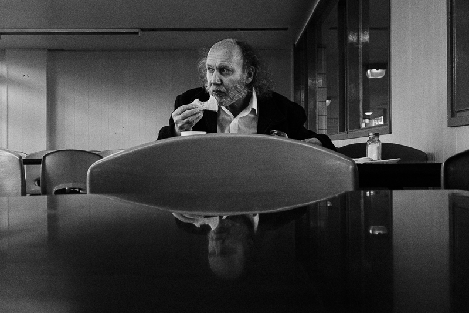
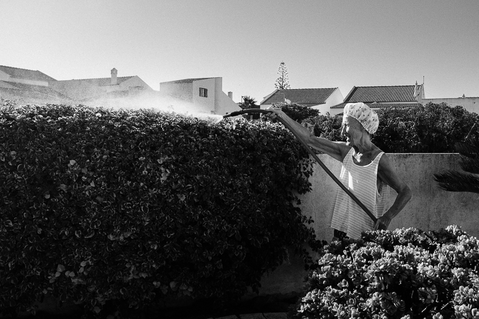
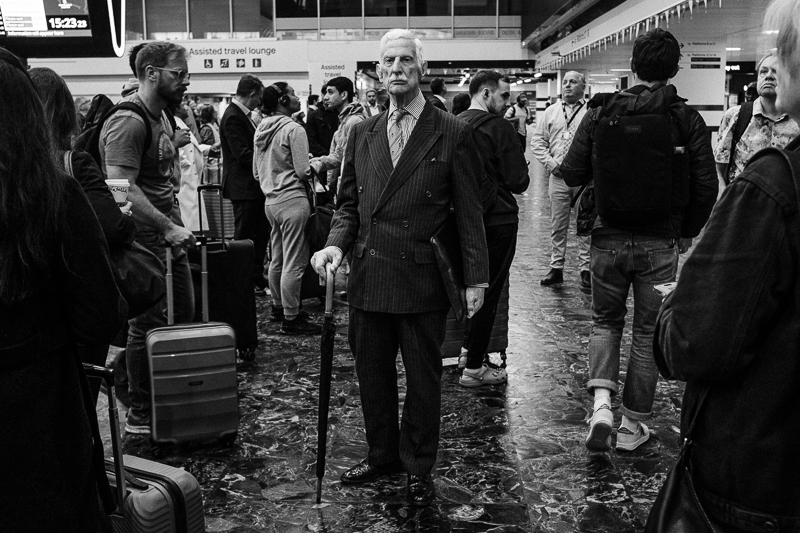

Newsletter 1: Outraging My True Nature
Hey, welcome to the first edition of my newsletter. Though I've written many over the years, this is the first dedicated to my original art and projects.
Some of you are friends, others know me from the film and business world, or even social media.
In this first edition, I want to give you all some context on my situation, and why I am writing this.
I'm still running my commercial film and photography studio. In particular, I'm working with AMS Neve on a continual basis.
But in the last 12-18 months, I have been on a transformational journey. Leading me towards producing original work again.
Before growing a business around film, I took street photographs and made music.
Early street photography work
But when I became a father, my focus shifted to creating a predictable revenue stream. And commercial film was the most viable route.
I spent the next decade on the production treadmill. Often working on exciting projects with iconic brands. I did also create original documentary films. Some of which featured on the BBC and at Kendal Mountain.
But last year, I was feeling burnt out with film work. And I felt a strong urge to make some changes.
To help me navigate this time, I started to work with a coach to explore new possibilities.
This period was transformational, creating huge shifts in all areas of life.
One of which was towards embracing my inner artist. And being OK with doing projects for their own sake.
I was reading Down And Out In Paris and London by George Orwell the other night. And the following quote spoke to me:
"From a very early age, perhaps the age of five or six, I knew that when I grew up I should be a writer. Between the ages of about seventeen and twenty-four I tried to abandon this idea, but I did so with the consciousness that I was outraging my true nature and that sooner or later I should have to settle down and write books."
The phrase that jumped out was, "Outraging my true nature." Which is exactly what I was doing by suppressing my artistic urges for so long.
My coach and I talked a lot about operating from 'effortless being.' Doing things from a place of ease, joy and flow.
I spent a decade doing the opposite of this. Trying to force myself down paths that weren't in line with my true nature.
I now understand my many acts of self sabotage in business. Especially pulling the plug on my attemps at 'growth.' Such as hiring employees and 'productising' my business. These things are not aligned with my true nature. It didn't feel like play to me, like it does to the true entrepreneur who loves the game.
Since embracing this new perspective, I have:
- Got back out on my hometown streets taking photographs.
- Dusted off my instruments and made an ambient music album.
- Attended a workshop in Arles, France, with legendary photographer David Alan Harvey.
- Made photo essays in Arles, Sagres and London.
- Began working on my first photography zines. One about this transformational summer. And another of my street photography work in my home town.
Arles, 2025
Sagres, 2025
London, 2025
All this brings me to my newsletter. Which I am using to document this return to making original art.
It's also a quiet, advert and algorithm free place to connect with people. Social media is another thing that fails to align with effortless being!
I plan to publish an edition each month. I will be sharing process notes, works-in-progress, and the odd announcement.
I hope you'll stick around and find it interesting.
Thank you for reading, and see you next month.
Garth